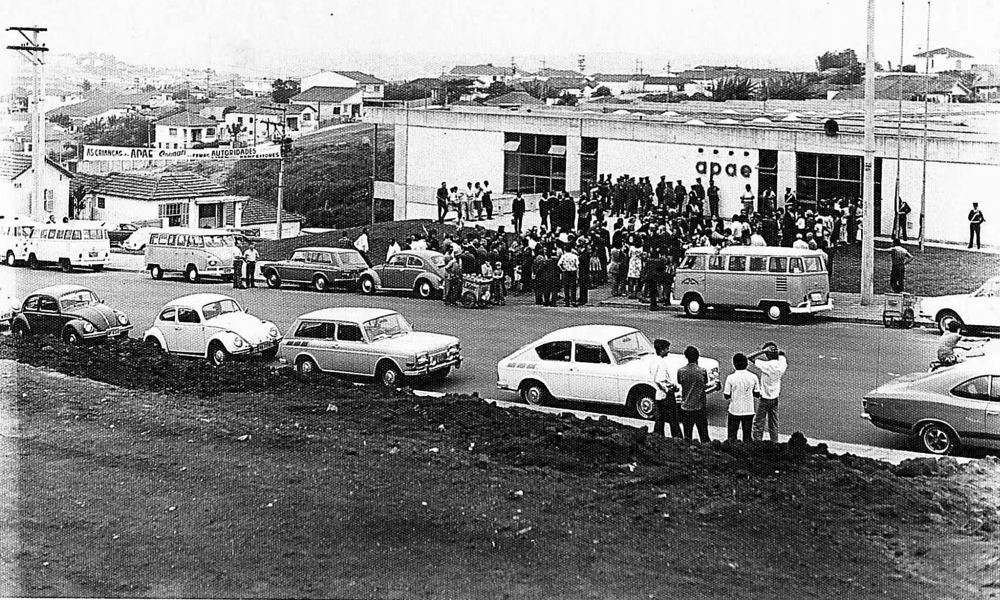
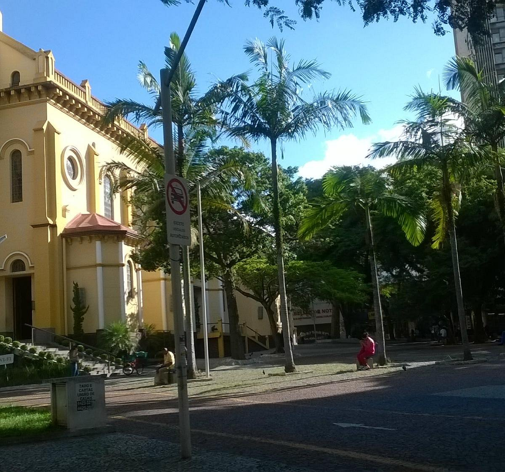
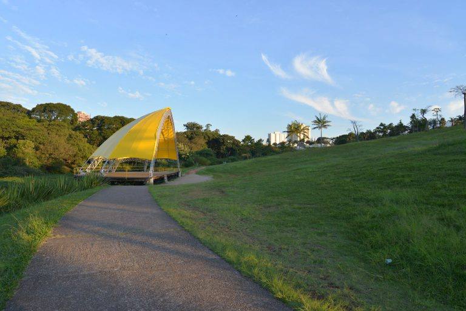
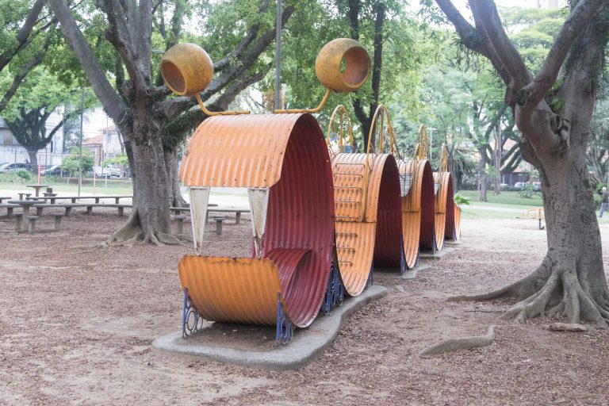

A história de Santo André teve início no século XVI. Em 1553, o lugar foi elevado à categoria de vila e nomeado Santo André da Borda do Campo. Alguns anos depois, em 1560, o vilarejo foi integrado à cidade de São Paulo como bairro.Depois de um período de estagnação, a região voltou a crescer e ganhou status de município em 1889, recebendo o nome de São Bernardo. Com o desenvolvimento acelerado, a cidade passou a ser dividida em distritos e um deles surgiu em 1910, com o nome de Santo André. A economia do município começou a se destacar na década de 1960, com a instalação de muitas montadoras de automóveis na região. Nesse período, os setores de autopeças, eletrônicos, produtos de borracha e componentes para refrigeração se desenvolviam em ritmo acelerado. Já nos anos 90, a industrialização passou a perder força e os segmentos comercial e de serviços passaram a oferecer excelentes opções de empregos. Nessa ocasião, muitas fábricas foram transformadas em centros comerciais.
Com uma economia forte e consolidada, Santo André é a 4ª cidade do estado de São Paulo que mais gera empregos formais. De janeiro a outubro de 2012, 9.562 pessoas conseguiram um trabalho com carteira assinada no município. A saúde é mais um setor da cidade que merece ser mencionado em razão de sua eficiência. A população tem à disposição aproximadamente de 35 unidades básicas (postos), com médicos de diversas especialidades, que atendem pelo Sistema Único de Saúde.
O investimento na área é tão grande, que a cidade possui a maior lista de medicamentos gratuitos do ABC (476 itens) e é a primeira da região a fornecer aos munícipes um medicamento para evitar acidente vascular cerebral. Outro ponto positivo de Santo André é a educação. O município conta com uma rede escolar própria, normatizada pelo Conselho Municipal de Educação. Entre as unidades municipais de ensino, estão centros públicos de educação para jovens e adultos, nos quais são oferecidos cursos de capacitação profissional. As creches também ganham destaque no cenário educacional. São mais de 20 unidades municipais e 18 conveniadas.
Rica em cultura e eventos, a cidade tem um Teatro Municipal, com três palcos de funcionamento simultâneo, e um museu, com acervo composto por objetos, livros, documentos, fotografias, jornais e revistas que revelam um pouco mais da história de Santo André. O lazer é garantido pelos 11 parques públicos que o município apresenta. O Parque Central, por exemplo, oferece pista de caminhada, praças de convivência, ciclovia, playground, palco em forma de concha, lago, campo de futebol, pista de automodelismo rádio-controlado, quadras poliesportivas e equipamentos de ginástica. As boas oportunidades de emprego, somadas aos investimentos feitos em educação, saúde, cultura e lazer, ampliam de maneira significativa a qualidade de vida da população de Santo André.
Fonte: https://www.abcdoabc.com.br/santo-andre
Santo André possui diversos pontos turísticos, locais de visitação turística com relevância cultural e/ou natural, com a possibilidade de contemplação, lugares incríveis para você visitar é o que não falta! Para te ajudar separamos 3 que você precisa conhecer.
Visite a Praça do Carmo — a mais antiga da região. Construída em 1919, a sua história está diretamente ligada à Catedral. Na época, o terreno foi doado por Antônio Queirós dos Santos e, em seguida, o pároco Padre Capra, da Igreja Matriz, foi o responsável por lançar a “pedra fundamental”, dando início a sua construção.
Localizada bem na área central, a Praça do Carmo, hoje, também abriga uma Feira de Artesanato, uma forte tradição da cidade. Programadas para todos os sábados e domingos, elas são ótimas para comprar roupas, itens decorativos, acessórios diversos e por aí em diante. Você também encontrará opções gastronômicas incríveis se desejar fazer uma parada para um lanche.
Não são apenas os pontos de comércio e as áreas culturais que formam o universo de lazer em Santo André é feito. Além disso, há diversos parques excelentes para as famílias relaxarem, fazerem um piquenique no fim de semana, praticarem esportes ao ar livre ou, simplesmente, admirar a natureza. Um deles, é o Parque Central — uma área ampla, de puro verde e extremamente tranquila.
Ao visitá-lo, os turistas e moradores podem desfrutar de uma pista de corrida que ultrapassa os 2 km de extensão, sem contar as quadras de esportes, que são perfeitas para uma partida de vôlei, basquete ou futebol. O diferencial é que esse espaço também conta com um palco, inaugurado em 1992, e que, desde então, vem abrigando apresentações diversas. Entre os artistas que já passaram por lá, podemos destacar Charlie Brown Jr e Vanessa da Mata. Se você também ficou interessado, procure acompanhar a programação pela internet e se organizar para os futuros eventos depois que tudo isso passar.
Temos também o Parque Antônio Fláquer, popularmente conhecido como “Ipiranguinha”. Antigamente, o terreno pertencia à Tecelagem Silva & Seabra, que era responsável por utilizar a água do córrego “Ipiranguinha” em seus processos de produção. Anos depois, o local passou por uma desapropriação, com o foco de construir uma praça completa e formada por brinquedos que foram doados pelo Rotary Clube.
Tal urbanização ocorreu em 1959 e, desde então, esse local vem sendo utilizado para fins de lazer e descanso. Chegar lá é fácil, já que existem boas opções de ônibus e, até mesmo, uma linha de trem. A entrada também é gratuita, com algumas opções de quiosques. Juntos, esses detalhes permitem que o público consiga se divertir sem precisar gastar muito.
Fonte: https://blogdaguaira.com.br/o-que-fazer-em-santo-andre/
Paulo Henrique Pinto Serra (Santo André, 6 de maio de 1973), mais conhecido como Paulo Serra, é um economista e político brasileiro filiado ao Partido da Social Democracia Brasileira (PSDB) e atual prefeito da cidade de Santo André em seu segundo mandato, tendo sido eleito em 2016 e reeleito em 2020. Serra foi também vereador por sua cidade natal por dois mandatos seguidos, sendo, à época, o mais jovem a ocupar esse cargo em Santo André. Foi vereador, por dois mandatos consecutivos, de 2005 até 2012, em Santo André.
Deixou o PSDB em 2012, que não apoiou a sua candidatura a prefeitura de Santo André, filiou-se ao PSD e apoiou o candidato petista à prefeitura Carlos Alberto Grana. Em 2013 foi nomeado secretário municipal de Mobilidade Urbana, Obras e Serviços Públicos do governo Grana, cargo que ocupou até 2015, quando saiu do governo e retornou ao PSDB para ser candidato à prefeitura